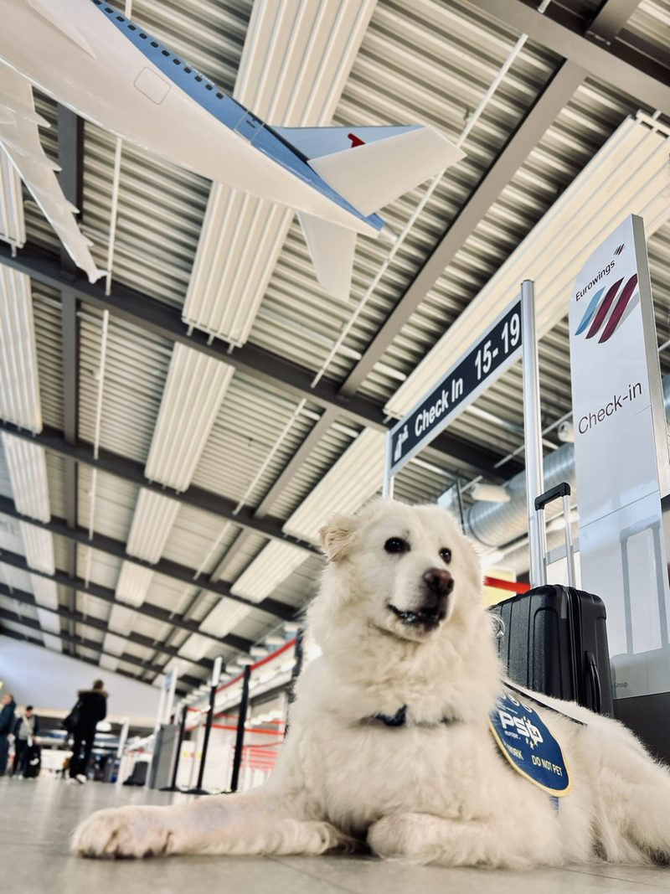
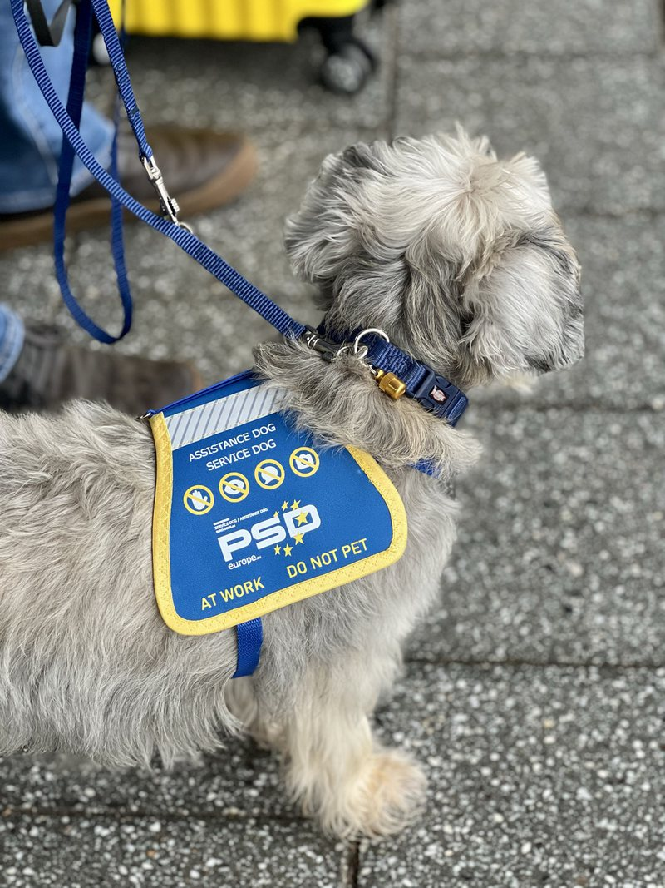
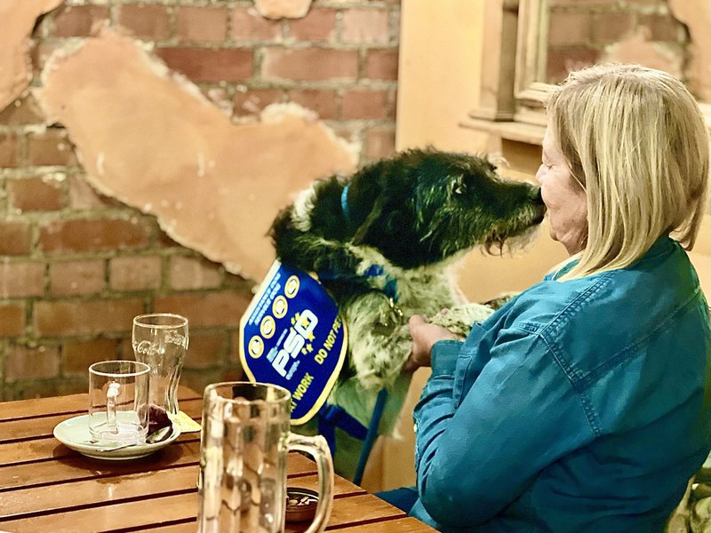
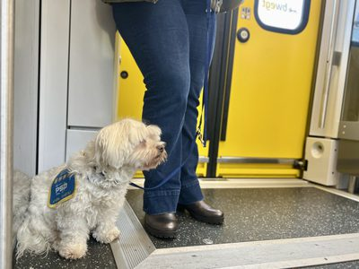
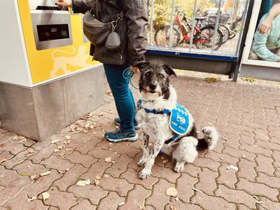
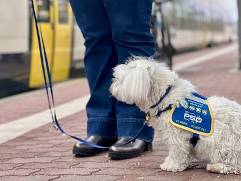
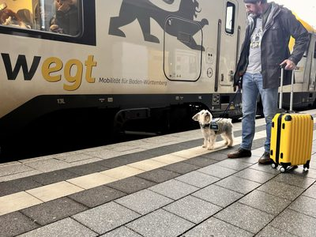

Assistance dogs for invisible disabilities
Training and certification for people with mental-health, behavioural and neurodevelopmental conditions — and their dogs. Entirely in Spanish, with a specialisation that almost nobody teaches in the region: travelling and flying.
“Thank you for giving us wings and the freedom to discover new beginnings, on the other side of the world.” — D.G.

Assistance DogLatin American roots, European standards
PSD Latinoamérica is a legally independent organisation, academically affiliated with PSDeurope. We work together so that a team trained in Spanish meets exactly the same quality standard as one trained in Europe.
Operational autonomy
We run the training in Spanish and adapt every programme to the realities of Latin America — its regulations, its airlines and the way people here learn and work.
Shared standards
Contents, assessments and quality criteria are developed and kept up to date together with PSDeurope, so the bar never moves between one region and the other.
International oversight
Under the agreed model, PSDeurope would act as the quality guarantor: accrediting the centre, auditing it periodically and issuing the international certification.
This is the model we are building together with PSDeurope. The cooperation framework — including the use of the PSD name, academic cooperation and the certification process — is currently being set out in a Memorandum of Understanding between both organisations.
One path, from your first lesson to an international certificate
You train once, in your own language, with us. PSDeurope does not teach the course again: it reviews, audits and certifies. It is the same model used by many international certification systems.
Training
The full programme in Spanish: video lessons, reading material and practical exercises, at your own pace.
Tutoring
Video sessions with your trainer to review progress and correct the work with your dog.
Assessment
Practical assessments and final examinations, including the public-access criteria.
Review & audit
Your complete student file — hours, videos, assessments and tasks — is reviewed by PSDeurope.
International certificate
PSDeurope issues the international certification that accompanies you when you travel.
Steps 4 and 5 describe the role PSDeurope would take under the accredited-centre model both organisations are currently setting out in a Memorandum of Understanding.
What a certification does — and does not — grant
Being honest about this is part of our standard. A certification proves that a human-dog team has been trained and assessed against a defined standard. It does not, by itself, create a legal right of access: each country — and each airline — applies its own rules. Part of our job is to teach you exactly which ones apply to you.
What you get with PSD Latinoamérica
A clear, standards-based and genuinely practical approach, built for real life: at home, in public and when travelling.
Standards-based
International quality criteria, shared with PSDeurope.
Professional assessment
Classification based on developmental, behavioural and psychological functioning.
The whole team
We do not train only the dog: we train the human-dog team as one unit.
Travel & Fly
Realistic preparation for airports, cabins and international travel.
Flying with your dog: the part nobody explains
Most people arrive with the same question: can my dog travel with me, and what do I actually need? The rules are complex, they change from country to country and they are badly documented in Spanish. That gap is precisely what we teach.
- Behaviour in the cabin and in confined spaces
- Airport situations and security checks
- Stress tolerance and impulse control
- Documentation for each airline and destination

A note on national regulations
Our approach is independent and internationally oriented. We analyse the relevant national regulations and — where they are compatible with the PSD standard — we integrate them into our training and quality criteria.
Requirements differ from one Latin American country to another, and several have no specific assistance-dog statute yet. We tell you plainly what applies where you live and where you want to travel.

Who we are
PSD Latinoamérica trains and certifies specialised assistance dogs for people with invisible disabilities, across Latin America and entirely in Spanish.
- Individual — Every team is different; the programme adapts to yours.
- Rigorous — International best practice and standards shared with PSDeurope.
- Close — Remote support that reaches wherever you are in the region.
Psychological, educational and relationship-based work — bonding, trust and shared development — is the foundation of everything we do.
Our team
A small team, with the training experience on one side and the technology on the other.

Leads the training methodology, protocols and certifications. She is also a senior trainer at PSDeurope, which is where this project began.
Senior trainer · PSDeurope
Builds the learning platform, the student records system and the technology behind certification.
Why PSD Latinoamérica exists
From emotional support to trained assistance
For years, an emotional-support letter was enough to fly with a dog. That era is closing: airlines increasingly recognise only dogs trained for specific tasks.
The gap in Spanish
The requirements are demanding, they are scattered across regulations and airline policies, and almost none of it is taught in Spanish. People are left guessing.
A partnership, not a copy
Rather than inventing another standard, we brought an existing one. PSD Latinoamérica was born from the work Antígona already does at PSDeurope, adapted to our region.




“Experiences that move”
The best way to describe this work is through the people we accompany.
Since my dog has been by my side as an assistance dog, I board the plane with confidence again. I feel safe — and free at the same time.
Before, I avoided a lot of things. Today I’m back among people. My dog gives me calm, orientation and confidence.
During the training I didn’t just learn how to train my dog — we became a team. That bond carries me through everyday life.
Testimonies from the PSDeurope programme, shared with permission. Names are shortened to protect privacy.
Tell us about you and your dog
Write to us with no commitment. We will reply with an honest assessment of what is possible in your case — including when the answer is “not yet”.
- A first conversation at no cost
- Guidance for your country and your destination
- Support in Spanish and English